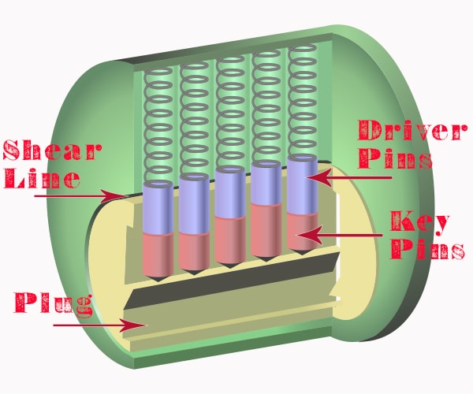
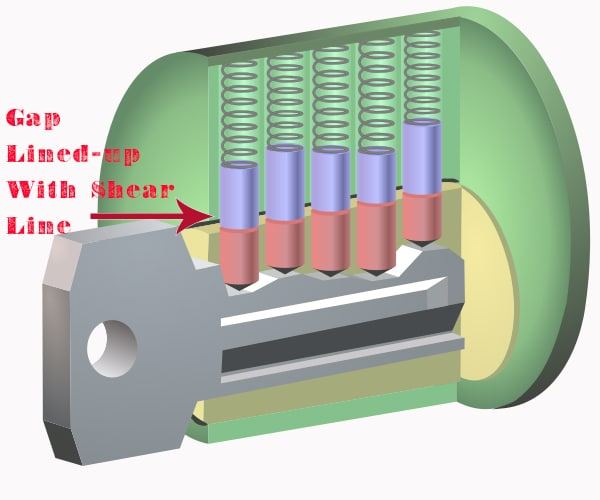

An Introduction to Lock Picking
So, lets start with the basics shall we? How does a lock even work. The most common type of lock, and the one we’ll be discussing in this course is a pin tumbler lock. The basic design for a pin tumbler lock has been in use since as far back as 4000 BCE. Obviously it has got more advanced over the years. The design that is present in most cylinder locks, like those used in most front doors was first used in about 1861 and hasn’t seen much change since. So all around the world most people are using a technology that has remained unchanged for the better part of 2 centuries to themselves and their possessions safe.
An Introduction to Lock Picking
Below is a diagram of your standard pin and tumbler lock:
So, the pin tumbler lock has 4 (arguably 5) main components. The outer case, coloured green in this case. The plug is placed inside the outer casing. The small gap between the plug and the outer casing is known as the shear line. Keep that in mind, we’ll circle back around to it soon. The plug contains an aperture for the key. When the right key is placed in the plug, this allows the plug to rotate and thus unlocks the lock. On the top of the plug typically about 5 or 6 holes a drilled. In These holes are key pins (coloured red here) of differing lengths. They’re known has key pins because they come in contact with the key when it is place in the plug. Above every key pin there is a driver pin that is spring loaded. These pins are also sometimes called binding pins.
An Introduction to Lock Picking
In the image above, there is no key inserted in the plug. Due to the different lengths of the key pins, the driver pins cross the shear line, therefore the plug cannot rotate and therefore the lock is locked. If you put the incorrect key into a lock, the notches on the key will not lift up the key pins to the proper height causing them to cross the shear line and once again, the lock wont open.
Lock Picking Technique
To allow the plug to rotate, each of the driver pins and key pins must be lifted to the correct height, this is when the gap between the driver pins and key pins reaches the shear line. When all the pins are in position the plug can rotate and thus the lock is unlocked.
When you are picking a lock, you’re just using tools in place of a key in order to line up the gap between the driver pins and the key pins with the shear line between the outer casing and the plug.